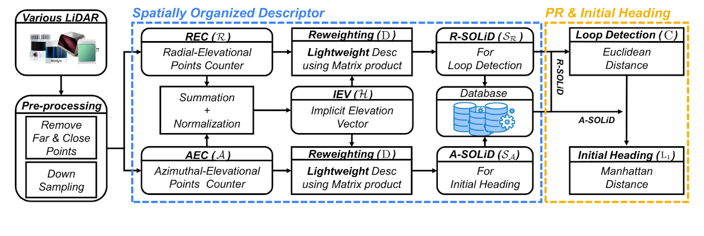

While global localization using spinning radar has gained attention for its robustness to adverse weather and challenging environments, many studies have focused on individual components such as place recognition or pose estimation.
In this paper, we take a holistic view of radar-based global localization and present RadLoc, a fast, robust, and lightweight end-to-end pipeline from place recognition to 3-DoF pose estimation. RadLoc accelerates pre-processing using 1D CA-CFAR filtering and leverages the near-range dominance in spinning radar images to design a compact descriptor and an efficient hierarchical coarse-to-fine retrieval strategy. Moreover, coupled with phase correlation-based 3-DoF pose estimation, it forms a versatile global localization module applicable to SLAM and multi-session SLAM systems.
Extensive experiments on 15 sequences across 5 datasets demonstrate that RadLoc achieves robust performance while maintaining the smallest descriptor size and fastest retrieval time among state-of-the-art approaches.

@inproceedings{kim2026radloc,
author = {Kim, Hogyun and Choi, Jiwon and Lee, Jungwoo and Cho, Younggun},
title = {RadLoc: Radar-based 3-DoF Global Localization via Fast, Robust, and Lightweight Spatial Descriptor Across Diverse Environmental Scenarios},
booktitle = {IEEE/RSJ International Conference on Intelligent Robots and Systems (IROS)},
year = {2026},
}